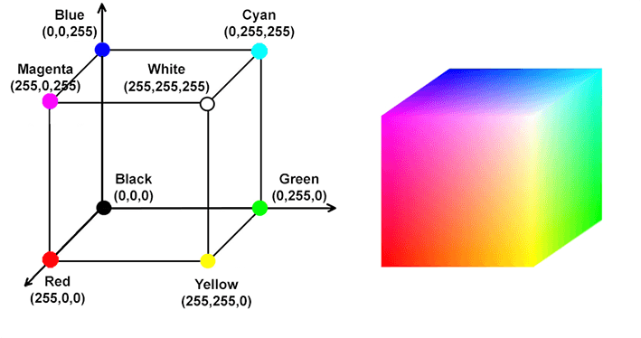

Los cimientos visuales de internet.
En 1989, el científico británico Tim Berners-Lee, trabajando en el laboratorio europeo de física de partículas (CERN), inventó la World Wide Web (WWW). Para que los científicos de todo el mundo pudieran compartir documentos fácilmente a través de internet, inventó el HTML (HyperText Markup Language).
Su invención es uno de los mayores hitos de la humanidad: democratizó el acceso a la información y creó la base sobre la que funciona el 100% de las páginas web que visitas hoy en día. Además, decidió regalar la tecnología al mundo de forma libre, sin cobrar patentes.
HTML no es un lenguaje de programación, es un lenguaje de marcado. Usa etiquetas (tags) envueltas en corchetes angulares para decirle al navegador qué es cada trozo de texto. Aquí tienes las más importantes:
<h1> (Título principal), <h2>, hasta <h6>.<strong> (Negrita) y <em> (Cursiva).<br> (Line break). A diferencia de los párrafos normales, fuerza un salto de línea sin crear un bloque nuevo. Ejemplo: Hola<br>Mundo. No tiene etiqueta de cierre.<a href="https://google.com">Ir a Google</a>. La etiqueta a (Anchor) envuelve el texto que se puede clicar, y el atributo href indica a qué web debe saltar el navegador.<ul> (Lista desordenada, viñetas) y <ol> (Lista ordenada, números). Cada elemento de la lista va dentro de un <li>.<img src="foto.jpg" alt="Descripción">. Tampoco tiene etiqueta de cierre.Las tablas requieren un montaje especial con varias etiquetas anidadas:
<table>: Envuelve a toda la tabla entera.<tr> (Table Row): Crea una fila horizontal nueva.<th> (Table Heading): Celda de título (normalmente va en negrita).<td> (Table Data): Celda normal con datos.<table border="1">
<tr>
<th>Nombre</th>
<th>Nota</th>
</tr>
<tr>
<td>Mario</td>
<td>10</td>
</tr>
</table>¿Quieres practicar HTML como si fuera un videojuego de plataformas? Juega a Super Markup World y salva al personaje escribiendo las etiquetas correctas para construirle puentes y escaleras.
CSS (Cascading Style Sheets) es el lenguaje que da colores, tamaños y posiciones a las etiquetas HTML aburridas. Pero antes de pintar algo, el CSS necesita apuntar o seleccionar qué elemento HTML quiere modificar. Existen 3 formas principales de seleccionar elementos:
p { color: red; } /* Todos los párrafos serán rojos */
class="destacado".
.destacado { font-weight: bold; }
id="menu-principal").
#menu-principal { background: black; }
¿No te queda clara la diferencia entre un ID y una clase? Domina los selectores de CSS sirviendo platos de comida en el restaurante de CSS Diner. ¡Te lo explica jugando!
Podemos cambiar la fuente con font-family: Arial, sans-serif;. El ancho y alto de cualquier elemento (o de una imagen) se controla con width: 300px; y height: 200px;.
Para cambiar colores usamos color: red; (para la letra) y background-color: blue; (para el fondo). En la web, los colores se definen mediante el modelo RGB (Red, Green, Blue).

Representación visual del modelo de color tridimensional.
rgb(255, 255, 255)). Si los apagas, obtienes negro.Por defecto, los elementos HTML caen uno debajo del otro. Pero a veces queremos romper esa regla y colocar un elemento en unas coordenadas matemáticas exactas de la pantalla:
position: absolute;: Saca al elemento del flujo normal. Ahora puedes usar top: 50px; y left: 100px; para moverlo exactamente 50 píxeles desde el borde superior y 100 desde el izquierdo, superponiéndolo a otras cosas.display: none;: Hace que el elemento desaparezca por completo, como si no existiera (muy útil en programación Javascript para ocultar ventanas).El 15% de la población mundial tiene algún tipo de discapacidad. ¿Tu web llega a todos ellos?
Asegurarse de que las personas con discapacidad puedan percibir, comprender, navegar e interactuar con la web.
* En España y la UE, las webs públicas están obligadas por ley a cumplir los estándares WCAG 2.1 nivel AA.
<img src="logo.png"><img src="logo.png" alt="Logotipo del Podcast Escolar">El texto debe tener suficiente contraste respecto al fondo (ratio mínimo 4.5:1). Texto gris claro sobre fondo blanco es ilegible para baja visión.
<input type="text" placeholder="Nombre"><label for="nombre">Tu Nombre:</label> <input type="text" id="nombre"><a href="audio.mp3">Haz clic aquí</a><a href="audio.mp3">Escuchar el episodio 1</a>